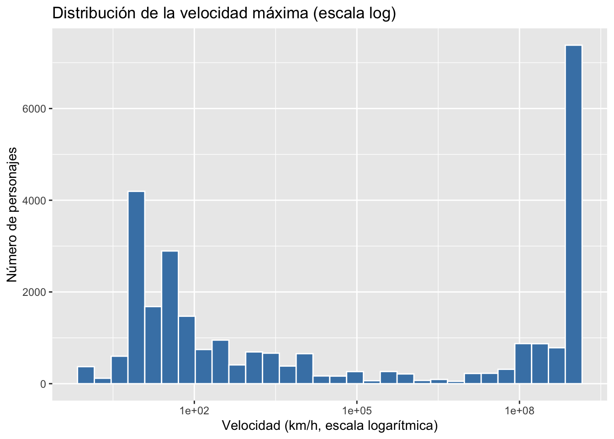
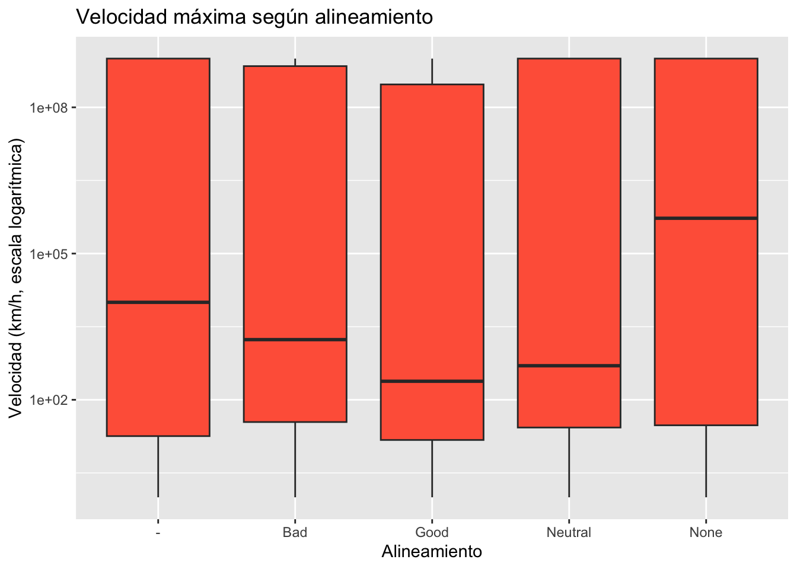
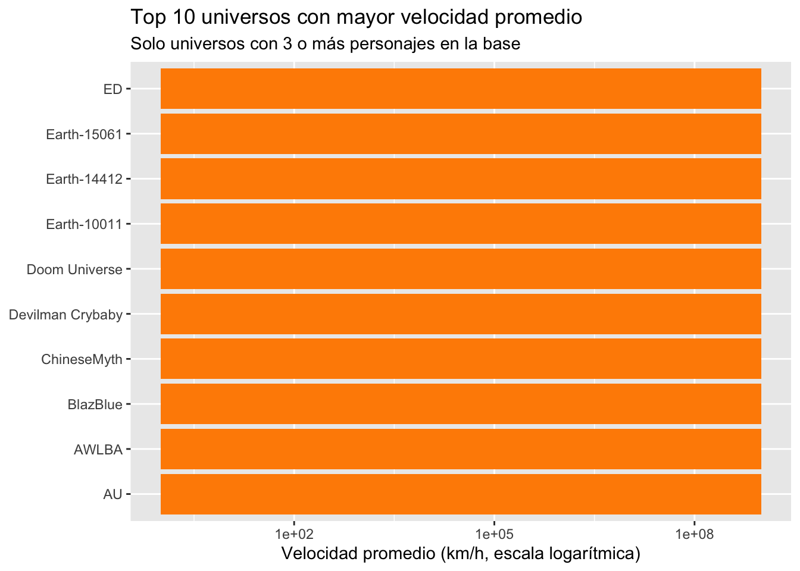
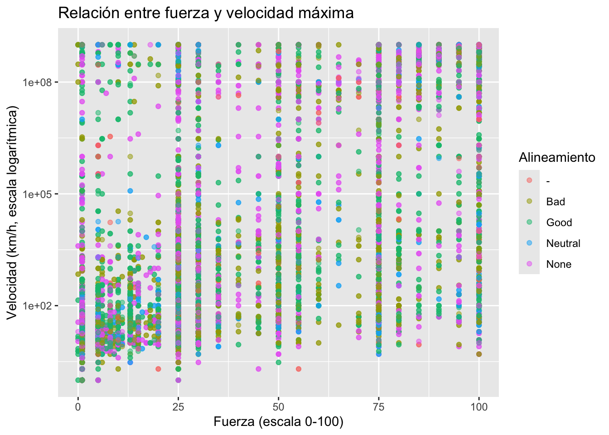

library(tidyverse)
superheroes <- read_csv("https://zenodo.org/records/22070395/files/Superheroes.csv")Sesión 1: Primeros pasos en R
Estadística descriptiva, dplyr y ggplot2 con datos de superhéroes
Introducción a Positron y R
En esta sesión aprenderemos los conceptos básicos de Positron y R, dos herramientas fundamentales para el análisis de datos en estadística.
Objetivos de la sesión
Esta es nuestra primera sesión práctica, así que partimos desde cero. Al finalizar vas a poder:
- Calcular e interpretar estadísticos descriptivos básicos (media, mediana, desviación estándar, varianza, rango).
- Entender qué es el tidyverse y por qué se usa en análisis de datos con R.
- Manipular bases de datos con las funciones principales de dplyr.
- Usar el operador pipe (
|>o%>%) para encadenar transformaciones. - Construir tus primeros gráficos con ggplot2.
NoteAntes de empezar
Necesitas tener instalado el paquete tidyverse. Si no lo has hecho, corre una vez en la consola:
install.packages("tidyverse")1. Nuestra base de datos: Superhéroes
Vamos a trabajar con una base de datos real de personajes de distintos universos (cómics, animes, películas), con estadísticas de combate como velocidad, fuerza e inteligencia.
La base original trae muchas columnas, incluyendo una llamada History con textos narrativos larguísimos que no necesitamos para el análisis estadístico. Nos quedamos solo con las columnas relevantes:
superheroes <- superheroes |>
select(Character, Alignment, Gender, Universe, Species,
Speed, Speed_velocity, Strength, Combat, Durability, Intelligence)
glimpse(superheroes)Rows: 28,118
Columns: 11
$ Character <chr> "Alucard", "Alucard", "Alucard", "Alucard", "Alucard", …
$ Alignment <chr> "Good", "Good", "Good", "Good", "Good", "Good", "Neutra…
$ Gender <chr> "Male", "Male", "Male", "Male", "Male", "Male", "Female…
$ Universe <chr> "C17S", "C17S", "Castlevania", "Castlevania", "ML", "ML…
$ Species <chr> "Human", "Human", "Vampire", "Vampire", "None", "None",…
$ Speed <dbl> 30, 30, 100, 100, 50, 50, 50, 50, 10, 10, 1, 1, 1, 80, …
$ Speed_velocity <dbl> 2000, 2000, 1000000000, 1000000000, 10000, 10000, 29979…
$ Strength <dbl> 30, 30, 100, 100, 50, 50, 55, 55, 25, 25, 1, 1, 1, 50, …
$ Combat <dbl> 80, 80, 90, 90, 100, 100, 90, 90, 40, 40, 11, 11, 11, 6…
$ Durability <dbl> 35, 35, 100, 100, 45, 45, 75, 75, 15, 15, 5, 5, 5, 60, …
$ Intelligence <dbl> 70, 70, 80, 80, 70, 70, 80, 80, 55, 55, 50, 50, 50, 65,…Las columnas con las que vamos a trabajar hoy:
| Variable | Descripción |
|---|---|
Character |
Nombre del personaje |
Alignment |
Alineamiento (Good, Bad, Neutral) |
Gender |
Género del personaje |
Universe |
Universo/franquicia de origen |
Species |
Especie (humano, alien, androide, etc.) |
Speed |
Velocidad en una escala de 0 a 100 |
Speed_velocity |
Velocidad estimada en km/h |
Strength |
Fuerza en una escala de 0 a 100 |
Combat |
Habilidad de combate (0 a 100) |
Durability |
Durabilidad/resistencia (0 a 100) |
Intelligence |
Inteligencia (0 a 100) |
2. Explorando la base de datos
Antes de calcular cualquier cosa, siempre es buena idea mirar la estructura de los datos.
glimpse(superheroes)Rows: 28,118
Columns: 11
$ Character <chr> "Alucard", "Alucard", "Alucard", "Alucard", "Alucard", …
$ Alignment <chr> "Good", "Good", "Good", "Good", "Good", "Good", "Neutra…
$ Gender <chr> "Male", "Male", "Male", "Male", "Male", "Male", "Female…
$ Universe <chr> "C17S", "C17S", "Castlevania", "Castlevania", "ML", "ML…
$ Species <chr> "Human", "Human", "Vampire", "Vampire", "None", "None",…
$ Speed <dbl> 30, 30, 100, 100, 50, 50, 50, 50, 10, 10, 1, 1, 1, 80, …
$ Speed_velocity <dbl> 2000, 2000, 1000000000, 1000000000, 10000, 10000, 29979…
$ Strength <dbl> 30, 30, 100, 100, 50, 50, 55, 55, 25, 25, 1, 1, 1, 50, …
$ Combat <dbl> 80, 80, 90, 90, 100, 100, 90, 90, 40, 40, 11, 11, 11, 6…
$ Durability <dbl> 35, 35, 100, 100, 45, 45, 75, 75, 15, 15, 5, 5, 5, 60, …
$ Intelligence <dbl> 70, 70, 80, 80, 70, 70, 80, 80, 55, 55, 50, 50, 50, 65,…nrow(superheroes) # número de filas (personajes)[1] 28118ncol(superheroes) # número de columnas (variables)[1] 11Pregunta para pensar: ¿cuántos personajes tiene nuestra base? ¿Cuántas variables estamos midiendo por cada uno?
NoteOjo: personajes repetidos
Esta base tiene varias filas para un mismo personaje (por ejemplo, distintas versiones o actualizaciones de “Alucard” o “Android 17”). Para efectos de esta clase lo dejamos así, peroen las siguientes sesiones, podemos ver como limpiar duplicados con distinct().
3. Estadística descriptiva básica
Nos vamos a concentrar en la variable Speed_velocity, osea la velocidad máxima estimada de cada personaje, en km/h.
3.1 Medidas de tendencia central
Media (promedio): suma todos los valores y divide por el número de casos.
mean(superheroes$Speed_velocity, na.rm = TRUE)[1] 290297160Mediana: el valor que queda justo al medio cuando ordenamos los datos de menor a mayor.
median(superheroes$Speed_velocity, na.rm = TRUE)[1] 1500
ImportantMedia vs. mediana
Si la media y la mediana son parecidas, los datos están relativamente “equilibrados”. Si son muy distintas, probablemente hay valores extremos (muy altos o muy bajos) que están “tirando” la media hacia un lado. En nuestra base hay personajes con velocidades extremas (miles de millones de km/h), lo que probablemente infla mucho la media respecto a la mediana. ¿Por qué crees que pasa esto con personajes de fantasía/ciencia ficción?

Tip¿Qué es
na.rm = TRUE?
Le indica a R que ignore los valores faltantes (NA) al calcular. Si no lo incluimos y hay algún valor faltante en la columna, R no puede calcular el promedio y devuelve NA como resultado.
3.2 Medidas de dispersión
Rango: la distancia entre el valor mínimo y el máximo.
min(superheroes$Speed_velocity, na.rm = TRUE)[1] 0max(superheroes$Speed_velocity, na.rm = TRUE)[1] 1e+09range(superheroes$Speed_velocity, na.rm = TRUE)[1] 0e+00 1e+09Varianza: mide en promedio qué tan lejos está cada valor de la media (elevado al cuadrado).
var(superheroes$Speed_velocity, na.rm = TRUE)[1] 1.877375e+17Desviación estándar: es la raíz cuadrada de la varianza. Se usa más que la varianza porque queda en las mismas unidades que la variable original (km/h en este caso).
sd(superheroes$Speed_velocity, na.rm = TRUE)[1] 433286853
Tip¿Cómo se interpreta la desviación estándar?
Nos dice, en promedio, cuánto se alejan los personajes de la velocidad promedio. Si la desviación estándar es baja, la mayoría tiene velocidades parecidas entre sí. Si es muy alta —como probablemente ocurra acá—, hay mucha variedad: desde personajes sin poderes especiales hasta seres que se mueven a velocidades absurdas.
3.3 Todo junto con summary()
R tiene una función que calcula varios estadísticos de una sola vez:
summary(superheroes$Speed_velocity) Min. 1st Qu. Median Mean 3rd Qu. Max. NAs
0.000e+00 2.200e+01 1.500e+03 2.903e+08 1.000e+09 1.000e+09 179 4. Primeros pasos con dplyr
dplyr nos permite explorar y manipular la base de datos de forma más flexible. Vamos a ver funciones básicas.
4.1 select() — elegir columnas
superheroes |>
select(Character, Speed_velocity)# A tibble: 28,118 × 2
Character Speed_velocity
<chr> <dbl>
1 Alucard 2000
2 Alucard 2000
3 Alucard 1000000000
4 Alucard 1000000000
5 Alucard 10000
6 Alucard 10000
7 Bayonetta 2997925
8 Bayonetta 2997925
9 Adam 18
10 Adam 18
# ℹ 28,108 more rows4.2 filter() — elegir filas según una condición
Por ejemplo, ¿qué personajes son del bando “Bad” (villanos)?
superheroes |>
filter(Alignment == "Bad")# A tibble: 6,366 × 11
Character Alignment Gender Universe Species Speed Speed_velocity Strength
<chr> <chr> <chr> <chr> <chr> <dbl> <dbl> <dbl>
1 Alessi Bad Male JJBA Human 1 2 1
2 Alessi Bad Male JJBA Human 1 2 1
3 Alessi Bad Male JJBA Human 1 2 1
4 Bad Ben Bad Male <NA> None 80 290000000 50
5 Bad Ben Bad Male <NA> None 80 290000000 50
6 Bad Ben Bad Male <NA> None 80 290000000 50
7 Aldrich Kill… Bad Male Earth-1… Metahu… 6 10 5
8 Aldrich Kill… Bad Male Earth-1… Metahu… 6 10 5
9 Aldrich Kill… Bad Male Earth-1… Metahu… 6 10 5
10 Archangel Bad Male Earth-8… Human 25 806 6
# ℹ 6,356 more rows
# ℹ 3 more variables: Combat <dbl>, Durability <dbl>, Intelligence <dbl>¿Y quiénes tienen una velocidad de combate (Combat) mayor o igual a 90?
superheroes |>
filter(Combat >= 90)# A tibble: 8,485 × 11
Character Alignment Gender Universe Species Speed Speed_velocity Strength
<chr> <chr> <chr> <chr> <chr> <dbl> <dbl> <dbl>
1 Alucard Good Male Castlevania Vampire 100 1000000000 100
2 Alucard Good Male Castlevania Vampire 100 1000000000 100
3 Alucard Good Male ML None 50 10000 50
4 Alucard Good Male ML None 50 10000 50
5 Bayonetta Neutral Female Bayonetta Human 50 2997925 55
6 Bayonetta Neutral Female Bayonetta Human 50 2997925 55
7 Alphamon None None Digimon None 100 1000000000 100
8 Alphamon None None Digimon None 100 1000000000 100
9 Alphamon None None Digimon None 100 1000000000 100
10 Android 16 Neutral Male DB Android 80 265000000 100
# ℹ 8,475 more rows
# ℹ 3 more variables: Combat <dbl>, Durability <dbl>, Intelligence <dbl>4.3 arrange() — ordenar
Del más veloz al más lento:
superheroes |>
arrange(desc(Speed_velocity)) |>
select(Character, Universe, Speed_velocity)# A tibble: 28,118 × 3
Character Universe Speed_velocity
<chr> <chr> <dbl>
1 Alucard Castlevania 1000000000
2 Alucard Castlevania 1000000000
3 Alpha-Hydranoid Bakugan 1000000000
4 Alpha-Hydranoid Bakugan 1000000000
5 Alphamon Digimon 1000000000
6 Alphamon Digimon 1000000000
7 Alphamon Digimon 1000000000
8 Android 17 DB 1000000000
9 Android 17 DB 1000000000
10 Augustus Giovanni WOD 1000000000
# ℹ 28,108 more rows4.4 group_by() + summarise() — resumir por grupo
¿Cuál es la velocidad promedio según el alineamiento del personaje?
superheroes |>
group_by(Alignment) |>
summarise(
velocidad_promedio = mean(Speed_velocity, na.rm = TRUE),
desviacion = sd(Speed_velocity, na.rm = TRUE),
n_personajes = n()
)# A tibble: 7 × 4
Alignment velocidad_promedio desviacion n_personajes
<chr> <dbl> <dbl> <int>
1 - 334387425. 449978234. 1089
2 Alignment NaN NA 1
3 Bad 274477736. 425913240. 6366
4 Good 221977686. 392206592. 10256
5 Neutral 299312270. 439993228. 2850
6 None 388926005. 468250378. 7378
7 <NA> NaN NA 178¿Y según el universo de origen? (mostramos solo los 10 universos con más personajes)
superheroes |>
group_by(Universe) |>
summarise(
velocidad_promedio = mean(Speed_velocity, na.rm = TRUE),
n_personajes = n()
) |>
arrange(desc(n_personajes)) |>
slice_head(n = 10)# A tibble: 10 × 3
Universe velocidad_promedio n_personajes
<chr> <dbl> <int>
1 <NA> 392545139. 3510
2 Earth-616 358175966. 2642
3 Prime Earth 458503751. 1718
4 DB 543569219. 684
5 MCU 52611968. 610
6 League Of Legends 16144561. 389
7 WOD 1000000000 385
8 Pokemon 190603695. 328
9 Star Wars 145650092. 310
10 Cv 24839019. 2985. Primeros gráficos con ggplot2
Como la variable Speed_velocity tiene valores extremadamente altos (personajes que se mueven a velocidades cósmicas), vamos a trabajar en escala logarítmica para que los gráficos se puedan interpretar mejor.
5.1 Histograma: ¿cómo se distribuye la velocidad?
superheroes |>
filter(!is.na(Speed_velocity), Speed_velocity > 0) |>
ggplot(aes(x = Speed_velocity)) +
geom_histogram(bins = 30, fill = "steelblue", color = "white") +
scale_x_log10() +
labs(
title = "Distribución de la velocidad máxima (escala log)",
x = "Velocidad (km/h, escala logarítmica)",
y = "Número de personajes"
)
5.2 Boxplot: comparando velocidad según alineamiento
superheroes |>
filter(!is.na(Speed_velocity), Speed_velocity > 0) |>
ggplot(aes(x = Alignment, y = Speed_velocity)) +
geom_boxplot(fill = "tomato") +
scale_y_log10() +
labs(
title = "Velocidad máxima según alineamiento",
x = "Alineamiento",
y = "Velocidad (km/h, escala logarítmica)"
)
5.3 Gráfico de barras: velocidad promedio por universo
superheroes |>
group_by(Universe) |>
summarise(
velocidad_promedio = mean(Speed_velocity, na.rm = TRUE),
n_personajes = n()
) |>
filter(n_personajes >= 3) |>
arrange(desc(velocidad_promedio)) |>
slice_head(n = 10) |>
ggplot(aes(x = reorder(Universe, velocidad_promedio), y = velocidad_promedio)) +
geom_col(fill = "darkorange") +
coord_flip() +
scale_y_log10() +
labs(
title = "Top 10 universos con mayor velocidad promedio",
subtitle = "Solo universos con 3 o más personajes en la base",
x = NULL,
y = "Velocidad promedio (km/h, escala logarítmica)"
)
5.4 Dispersión: ¿la fuerza se relaciona con la velocidad?
superheroes |>
filter(!is.na(Speed_velocity), !is.na(Strength), Speed_velocity > 0) |>
ggplot(aes(x = Strength, y = Speed_velocity, color = Alignment)) +
geom_point(alpha = 0.5) +
scale_y_log10() +
labs(
title = "Relación entre fuerza y velocidad máxima",
x = "Fuerza (escala 0-100)",
y = "Velocidad (km/h, escala logarítmica)",
color = "Alineamiento"
)
6. Actividad práctica
TipEjercicio 1: Estadísticos descriptivos
Usando la variable Combat (habilidad de combate):
- Calcula la media, mediana, varianza y desviación estándar (recuerda usar
na.rm = TRUE). - ¿La media y la mediana son parecidas? ¿Qué te dice eso sobre la distribución?
- ¿Cuál es el personaje con mayor
Combat? (pista: usaarrange())
TipEjercicio 2: dplyr
- Filtra los personajes que sean del género
"Female". - De ese grupo, ordénalos de mayor a menor
Intelligence. - Calcula el promedio de
Intelligencede ese subgrupo consummarise(). ¿Es mayor o menor que el promedio general de la base completa?
TipEjercicio 3: ggplot2
- Crea un histograma de la variable
Durability(sin necesidad de escala logarítmica, ya que va de 0 a 100). - Crea un gráfico de dispersión entre
Intelligence(eje x) yCombat(eje y), coloreado porAlignment. - ¿Se observa alguna relación entre la inteligencia y la habilidad de combate de los personajes?
7. Resumen de funciones vistas hoy
| Función | Paquete | Qué hace |
|---|---|---|
read_csv() |
readr | Lee un archivo .csv (local o desde una URL) |
mean() |
base R | Calcula el promedio |
median() |
base R | Calcula la mediana |
sd() |
base R | Calcula la desviación estándar |
var() |
base R | Calcula la varianza |
range() |
base R | Entrega el mínimo y máximo |
summary() |
base R | Resumen rápido de estadísticos |
select() |
dplyr | Elige columnas |
filter() |
dplyr | Elige filas según condición |
arrange() |
dplyr | Ordena filas |
group_by() + summarise() |
dplyr | Resume datos por grupo |
slice_head() |
dplyr | Se queda con las primeras n filas |
ggplot() + geom_*() |
ggplot2 | Construye gráficos por capas |
scale_x_log10() / scale_y_log10() |
ggplot2 | Transforma un eje a escala logarítmica |